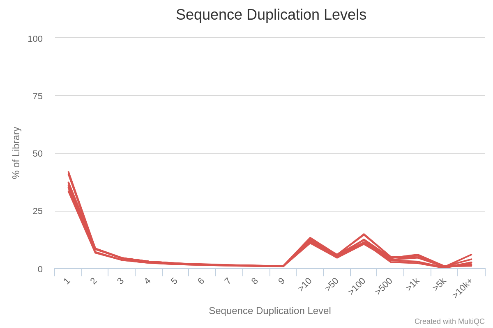

Quality control
Quality Control is the essential first step to perform once you have your data as .fastq or .fastq.gz form.
During this block, you will learn to :
- create QC report for a single file with fastqc
- aggregate multiple QC reports using multiqc
- interpret the QC reports for RNAseq experiement
Note
Although we aim to present tools as stable as possible, software evolve and their precise interface can change with time. We strongly recommend you to have a look at each command help page or manual before launching any command. To this end we provide links to each tool website.
This can also be useful to you if you are following this course without access to a compute cluster and have to install these tools on your machine.
Material
Meet the datasets
We will be working with two datasets from the following studies:
-
Liu et al (2015) “RNA-Seq identifies novel myocardial gene expression signatures of heart failure” Genomics 105(2):83-89 https://doi.org/10.1016/j.ygeno.2014.12.002
- GSE57345
- Homo sapiens heart left ventricle samples : 3 with heart failure, 3 without
- 6 samples of paired-end reads
-
Ruhland et al (2016) “Stromal senescence establishes an immunosuppressive microenvironment that drives tumorigenesis” Nature Communications 7:11762 https://dx.doi.org/10.1038/ncomms11762
- GSE78128
- Mus musculus skin fibroblast samples : 3 non-senescent (EtOH) , 3 senescent(TAM)
- 6 samples of single-end reads
Retrieving published datasets
Warning
If you are following this course with a teacher, then the for the data is already on the server. There is no need to download it again.
Most NGS data is deposited at the Short Read Archive (SRA) hosted by the NCBI, with links from the Gene Expression Omnibus (GEO)
Several steps are required to retrieve data from a published study :
- find GEO or SRA identifier from publication
- find the “run” files for each sample (SRR)
- use SRA Toolkit to dump SRR to FASTQ
For example, on the Liu2015 dataset :
- Locate in their publication the GEO accession: GSE57345
- Use the NCBI search engine to find this accession : GSE57345
- This project is made of several subproject. Scroll down, and in the table find the Bioproject id : PRJNA246308
- Go to the SRA run selector, enter your Bioproject id
- From the results of your search, select all relevant runs
- click on “Accession List” in the Select table

- use
fastq-dump(part of the SRA Toolkit) on the downloaded accession list. For example:
fastq-dump --gzip --skip-technical --readids --split-files --clip SRR1272191
Note
- You’ll need to know the nature of the dataset before attempting to (library type, paired vs single end, etc)
fastq-dumptakes a very long time- More information about fastq-dump
FastQC : a report for a single fastq file
FastQC is a nice tool to get a variety of QC measures from files such as .fastq, .bam or .sam files.
Although it has many options, the default parameters are often enough for our purpose :
fastqc -o <output_directory> file1.fastq file2.fastq ... fileN.fastq
FastQC is reasonnably intelligent and will try to recognise the file format and uncompress it if necessary (so no need to decompress).
Task:
- run FastQC analysis on the two datasets at:
/shared/home/SHARED/DATA/Liu2015/and/shared/home/SHARED/DATA/Ruhland2016. - Look at one of the QC report. What are your conclusions ? Would you want to perform some operations on the reads such as low-quality bases trimming, removal of adapters ?
Important points:
- there is no need to copy the read files to your home directory (in fact, don’t do that: we won’t have enough space left on the disk…)
- FastQC RAM requirements : 1Gb is more than enough
- FastQC time requirements : ~ 5min / read file
- try to make sure FastQC outputs all reports in the same directory, this will save time for the next step ;-)
Note
reminder : to get the data from the distant server to your machine, you may use an SFTP client (filezilla, mobaXterm), or the command line tool from your mahcine : scp login@xx.xx.xx:~/path/to/file.txt .
Liu2015 FastQC sbatch script
Here is an sbatch script for one sample:
#!/usr/bin/bash
#SBATCH --job-name=fastqc
#SBATCH --time=01:00:00
#SBATCH --cpus-per-task=1
#SBATCH --mem=1G
#SBATCH -o fastqc_Liu2015.o
#SBATCH -e fastqc_Liu2015.e
dataDir=/shared/home/SHARED/DATA/Liu2015
ml fastqc
# creating the output folder
mkdir -p FASTQC_Liu2015/
fastqc -o FASTQC_Liu2015/ $dataDir/SRR1272187_1.fastq.gz
You could either have one sbatch script per sample (recommended),
OR put the fastqc commands for all the samples in the same script (not recommended).
The first is recommended because you can submit each scripts at once and they will then run in parallel, whereas with the second option the samples would be handled sequentially and the overall job would likely take >1hour.
Ruhland2016 FastQC sbatch script
Here is an sbatch script for one sample:
#!/usr/bin/bash
#SBATCH --job-name=fastqc
#SBATCH --time=01:00:00
#SBATCH --cpus-per-task=1
#SBATCH --mem=1G
#SBATCH -o fastqc_Ruhland2016.o
#SBATCH -e fastqc_Ruhland2016.e
dataDir=/shared/home/SHARED/DATA/Ruhland2016
ml fastqc
# creating the output folder
mkdir -p FASTQC_Ruhland2016/
fastqc -o FASTQC_Ruhland2016/ $dataDir/SRR3180540_TAM3_1.fastq.gz
You could either have one sbatch script per sample (recommended),
OR put the fastqc commands for all the samples in the same script (not recommended).
The first is recommended because you can submit each scripts at once and they will then run in parallel, whereas with the second option the samples would be handled sequentially and the overall job would likely take >1hour.
alternative scripts using array job
First, have a file named Ruhland2016.fastqFiles.txt containing the sample fastq file names :
SRR3180535_EtOH1_1.fastq.gz
SRR3180536_EtOH2_1.fastq.gz
SRR3180537_EtOH3_1.fastq.gz
SRR3180538_TAM1_1.fastq.gz
SRR3180539_TAM2_1.fastq.gz
SRR3180540_TAM3_1.fastq.gz
Then, in the same folder, you can create this sbatch script :
#!/usr/bin/bash
#SBATCH --job-name=fastqc
#SBATCH --time=00:30:00
#SBATCH --cpus-per-task=1
#SBATCH --mem=1G
#SBATCH -o fastqc_Ruhland2016.%a.o
#SBATCH -e fastqc_Ruhland2016.%a.e
#SBATCH --array 1-6%6
ml fastqc
dataDir=/shared/home/SHARED/DATA/Ruhland2016
sourceFILE=Ruhland2016.fastqFiles.txt
## retrieving 1 filename from Ruhland2016.fastqFiles.txt
fastqFILE=`sed -n ${SLURM_ARRAY_TASK_ID}p $sourceFILE`
mkdir -p FASTQC_Ruhland2016/
$singularity_exec fastqc -o FASTQC_Ruhland2016/ $dataDir/$fastqFILE
When submitted with sbatch, this script will spawn 6 tasks in parallel, each with a different value of ${SLURM_ARRAY_TASK_ID}.
This is the most recommended option : this allows you to launch all your job in parallel with a single script.
Interpretation of a report
MultiQC : grouping multiple reports
In practice, you will be likely to have more than a couple of samples (and often more than 30 or 50) to handle: consulting and comparing the QC reports of each individually would be tedious.
MultiQC is a tool that lets you combine multiple reports in a single, interactive document that let you explore your data easily.
We will here be focusing on grouping FastQC reports, but MultiQC can also be applied to the output or logs of other bioinformatics tools, such as mappers as we will see later.
In its default usage, multiqc only needs to be provided a path where it will find all the individual reports, and it will scan them and write a report named multiqc_report.html.
Although the default behaviour, with a couple of options we get a slightly better control over the output:
* --interactive : forces the plot to be interactive even when there is a lot of samples (this option can lead to larger html files)
* -f <filename> : specify the name of the output file name
For instance, a possible command line could be :
multiqc -f multiQCreports/Liu2015_multiqc.html --interactive Liu2015_fastqc/
Ther are many additonnal info which let you customize your report. Use multiqc --help or visit their documentation webpage to learn more.
Task:
- run MultiQC for each dataset.
- Look at the QC report. What are your conclusions ?
Important points:
- MultiQC RAM requirements : 1Gb should be more than enough
- MultiQC time requirements : ~ 1min / read file
sbatch scripts
This is the script for the Ruhland2016 dataset. It presumes that the fastqc reports can be found in FASTQC_Ruhland2016/
#!/usr/bin/bash
#SBATCH --job-name=multiqc
#SBATCH --time=00:30:00
#SBATCH --cpus-per-task=1
#SBATCH --mem=1G
#SBATCH -o multiqc_Ruhland2016.o
#SBATCH -e multiqc_Ruhland2016.e
ml multiqc
mkdir -p MULTIQC_Ruhland2016/
multiqc -o MULTIQC_Ruhland2016/ FASTQC_Ruhland2016/
Interpretation of a report
We will interpret the report for the Liu2015 data.

The quality of reads drop below 30 around base 75. All samples seem affected

Mean quality scores are on average fairly high, but some read exhibit low values.

Most samples do not deviate too much from the expected curve. The two sample colored in orange and red have a mode for a very specific value. That may be indicative of contamination, retaining specific rRNA, or adapter sequence content.

Ns are present at specific positions in specific samples. This is reminiscent of the PHRED quality curves at the top of the report. It seems some flowcells had a problem at specific time-point/positions.

This is colored red because this would be a problem if the data was coming from genomic DNA sequencing. However here we are in the context of RNAseq : some transcripts are present in a large number of copies in the samples and consequently it is expected that some sequences are overrepresented.

We see a clear trend of adapter contamination as we get closer to the reads end. Note the y-scale though : we never go above a 6% content per sample.
Overall, we can conclude that these sample all suffer from some adapter content and a lower quality toward the reads second half. Furthermore a few samples have a peculiar Ns pattern between bases 20 and 30.
It is then strongly advised to either :
- perform some trimming : remove adapter sequences + cut reads when average quality becomes too low
- use a mapper that takes base quality in account AND is able to ignore adapter sequence (and even then, you could try mapping on both croppedand uncropped data to see which is the best)